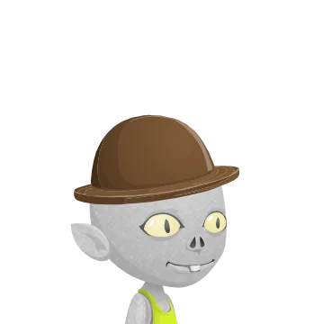

Drawn from the pieces Tiny Speck left behind.
Every Glitch in the game is now drawn from Tiny Speck’s vector parts, and the old bitmap avatars are gone: they were real players’ avatars caught by the Wayback Machine, so they were only ever reference. New players start from the original avatar picker, with four choices for each of nine parts, and the presets gained four Starter looks and thirteen Costumes. Your Butler can be rebuilt part by part from its own Flash doll and trades hi signs with you each day. Behind the Mezzanine, the Hall of Rejected Concepts is open again, and a few rooms that never made it into the archive now look the way players’ Snaps show them.

Every Glitch drawn sharp
You, the rivals, guests and companions are all drawn from Tiny Speck’s vector parts now, and old saves move to the nearest vector look. Start fresh opens the original new-player picker: nine parts, four choices each. Four Starter looks and thirteen Costumes join the presets, so you can dress as the Rook, a giant, a chicken or a garden gnome.
A Butler of your own making
The Butler’s Flash doll was flattened into 171 parts, so you can change its head, face, accessory, body, arms and legs one at a time, or randomize the lot. Press 5 to flash your hi sign for the day: the Butler says hi back once a day, with a bonus when your signs match.
The Hall of Rejected Concepts
Behind the Mezzanine, fourteen exhibits stand in their recorded order, from the Rube to Avatars. The room is laid out from ten players’ Snaps and two recordings, and each Wall Button raises Tiny Speck’s own caption for its exhibit, like “A bunny. Why? Because bunny.”
Rooms as players saw them
Mr. Block’s playroom is the giant Kid’s Room again, with monster wallpaper, a bed, a panda and a tea party. The Rube’s yard is a dusky junk garden of flamingos, lanterns and a rook skull, and Operation Grow’s stalks turn teal and glow as they bloom. None of the three survived in the archive, so they are dressed from players’ Snaps.
Sky Plunge lands softly
The only picture of the course, a player’s Snap from October 2012, sets the landing: a cream-gold sky, sun rays and a white cloud floor, with a Back to Top door and “AHHHHH YEAHHHH!!!!!” in the clouds. A Qurazy quoin hides on the way down.
Crowded streets
Pack too many animals onto one street and they sulk, grumble and sometimes leave, and at the limit one puffs away. Hechey Track holds 20 piggies and a starter yard 18; the Happy Animals cards raise your yard to 20, then 22.
Shake the Elemental Pouch
Buy one from a hardware, alchemical, tool or mining vendor, which also completes Get Elemental!, and shake it once a game day for bonus elements.
Lanterns, loading cards and chatty plots
Jack-O-Lanterns are drawn sharp from their Flash files, all 74 frames in the original order. The loading card remembers when you were last on a street and what lives there, and garden plots answer every plant, water, hoe and pick with lines from all 31 of the original talkback pools.